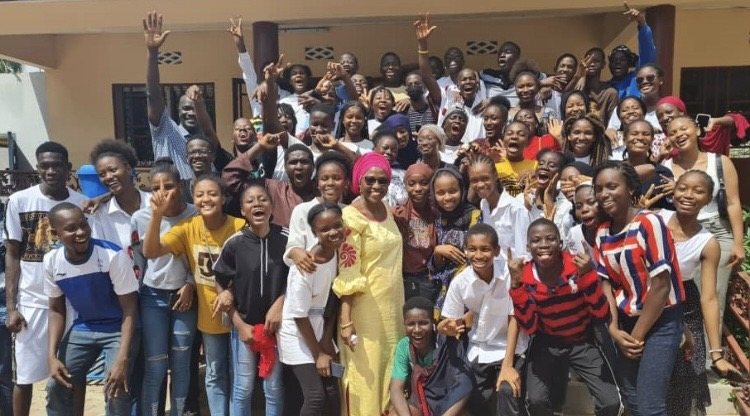

Maternelle
Enfants âgés de 3 ans révolus au moment de la rentrée. Entretien avec les parents, pas de test.
 République de Guinée · Travail – Justice – Solidarité
République de Guinée · Travail – Justice – Solidarité
Une procédure claire, un accueil personnalisé : le secrétariat vous accompagne à chaque étape de l'inscription.
Enfants âgés de 3 ans révolus au moment de la rentrée. Entretien avec les parents, pas de test.
Présentation du dernier bulletin scolaire et test de niveau pour les nouveaux élèves. Pour la 7e année, résultat du CEE.
Admission en 11e année après le BEPC. Le choix de la série (SM, SE, SS) se fait selon les résultats et le projet de l'élève.
Présentez-vous au secrétariat avec le dossier complet, ou contactez-nous pour prendre rendez-vous.
Prendre rendez-vousAu secrétariat de l'école, ou sur demande par téléphone ou e-mail.
Extrait d'acte de naissance, derniers bulletins, certificat de radiation (exeat) le cas échéant, photos d'identité.
Test de niveau pour les nouveaux élèves et rencontre avec les parents.
Règlement des frais d'inscription et remise de la liste des fournitures. Bienvenue !
Les places étant limitées dans certaines classes, nous vous conseillons de vous inscrire tôt.
| Étape | Période | Concerne |
|---|---|---|
| Réinscriptions | Juin – juillet | Élèves déjà inscrits |
| Nouvelles inscriptions | Juillet – septembre | Nouveaux élèves, tous niveaux |
| Tests de niveau | Août – septembre | Primaire, collège, lycée |
| Rentrée des classes | Octobre | Tous les élèves |
Le barème des frais varie selon le cycle. Il vous est remis lors du retrait du dossier.

Nous accueillons les enfants dès 3 ans en petite section de maternelle, puis à tous les niveaux jusqu'à la Terminale, dans la limite des places disponibles.
Pour les nouveaux élèves du primaire au lycée, un test de niveau en français et en mathématiques permet de vérifier que la classe demandée correspond au niveau de l'enfant.
Oui, sous réserve de places disponibles et de la présentation d'un certificat de radiation (exeat) de l'établissement précédent.
Les frais peuvent être réglés en plusieurs tranches au cours de l'année. Le secrétariat vous communique le barème détaillé et les modalités de paiement.
Les parents reçoivent les bulletins à chaque période et sont conviés aux rencontres parents – enseignants. Vous pouvez aussi demander un rendez-vous avec la direction à tout moment.
Le secrétariat vous accueille du lundi au samedi pour répondre à toutes vos questions.